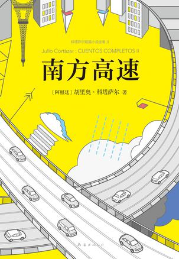

南方高速

作者：
[阿根廷] 胡利奥・科塔萨尔
出版社:
南海出版贵司
出品方:
新经典文化
原作名:
Cuentos completos 2
译者：
金灿 / 林叶青 / 陶玉平
出版年:
2017-10
页数:
441
定价:
68.00
装帧:
精装
丛书
新经典文库：科塔萨尔作品
IBSN:
9787544290678
内容简介....
★ 马尔克斯、聂鲁达、萨拉马戈、略萨、莫言 5位诺贝尔文学奖得主齐声推崇 ★ 安东尼奥尼、王家卫 两代世界级导演倾心爱重 ★ 天才的，迷人的，独一无二的科塔萨尔：生活，本该是日复一日的奇迹。 ★ 科塔萨尔最受欢迎、最受期待的小说集 // 金棕榈大奖电影《放大》原著小说中文版首次面世 ★ 本卷收录《秘密武器》《克罗诺皮奥和法玛的故事》《万火归一》三部短篇集，每一部都是传世佳作。科塔萨尔说：“我想创作的是一种从未有人写过的短篇小说。” ★ 阅读《南方高速》时，我的心情激动不安，第一次感觉到叙述的激情和语言的惯性，接下来我就模拟着它的腔调写了《售棉大路》。这次摹仿，在我的创作道路上意义重大。――诺贝尔文学奖得主莫言 ★ 任何不读科塔萨尔的人命运都已注定。那是一种看不见的重病，随着时间的流逝会产生可怕的后果。在某种程度上就好像从没尝过桃子的滋味，人会在无声中...